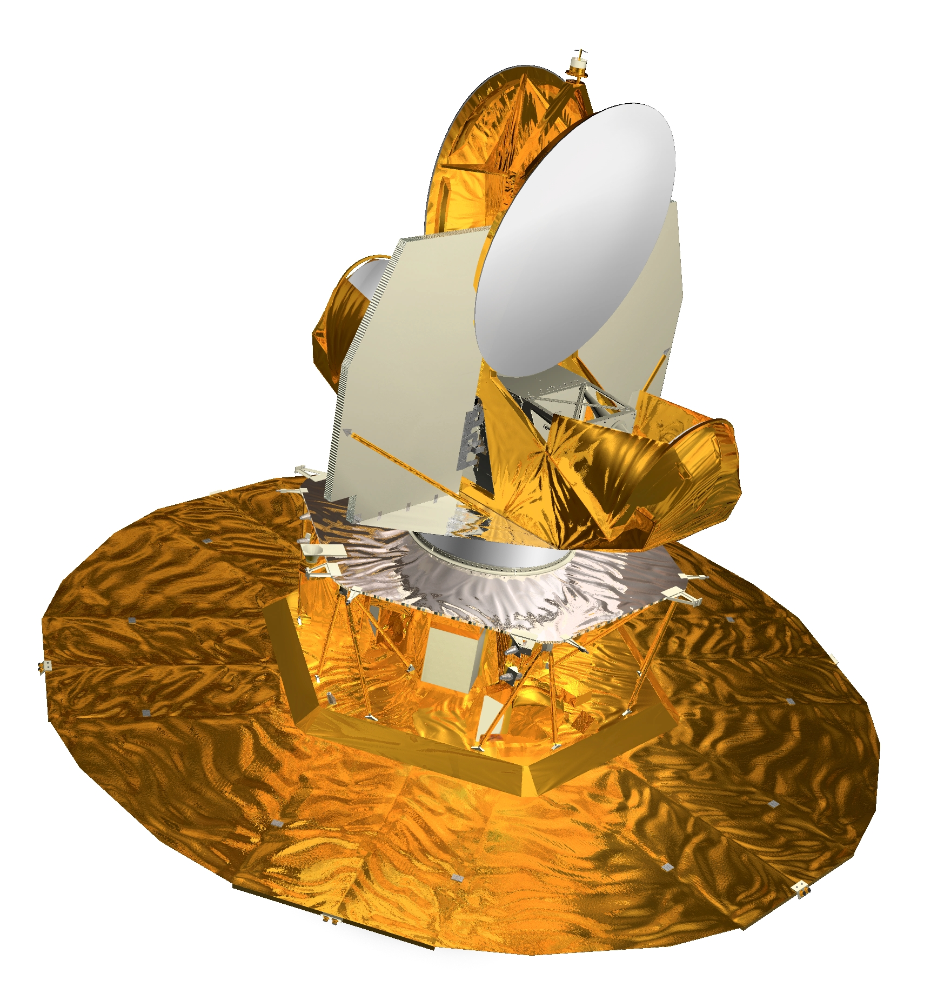
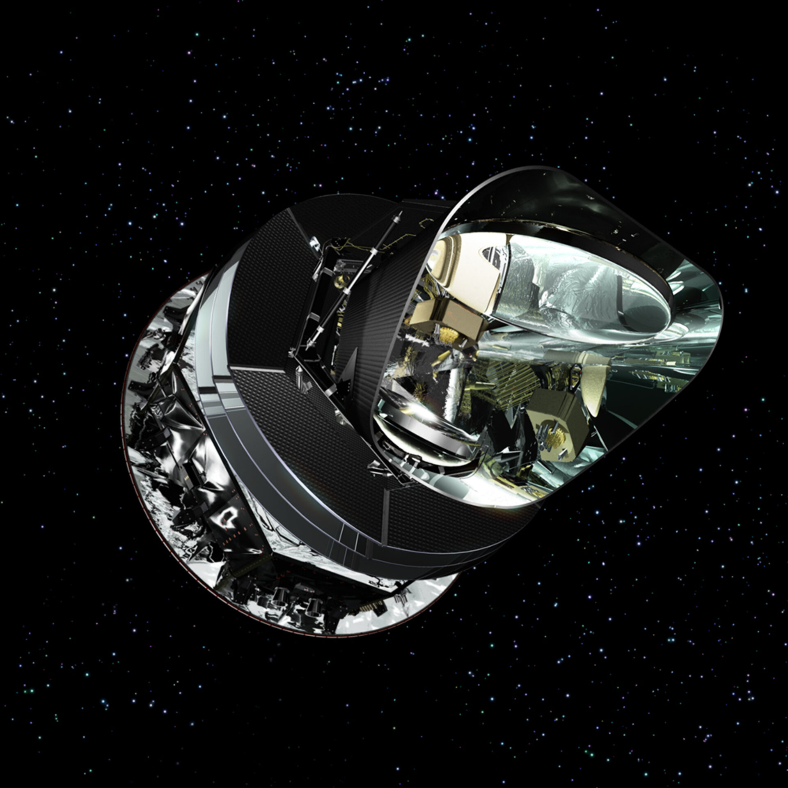

Development of Cosmic Microwave Background Radiation (CMBR) Maps in the Last 20 Years

Cosmic Microwave Background Radiation is radiation that comes as leftover heat from the Big Bang. In 1965, Arno Penzias and Robert Wilson attempted to detect radio waves from a supernova. They kept on getting an interference of noise which was constant in all directions that they checked. Eventually, they came to the conclusion that the signals were from the universe. This was the first detection of CMBR which also gives very strong support to the Big Bang Theory. The CMBR detected today is only 2.725 degrees above absolute zero. In the earlier days of the universe, CMBR was much hotter, making it very difficult for life to develop.
The Wilkinson Microwave Anisotropy Probe (WMAP) was a spacecraft developed by NASA in order to measure the temperature differences in CMBR. Essentially, the measurements were then used to test the Big Bang model. In order to collect data it has radiometers to measure the difference between two telescope beams. After one year, NASA published the data collected from the WMAP. With the data collected, they were able to calculate the age and composition of the early universe. Also, they were able to produce an accurate image of cosmic background radiation. In 2006, 3 years of data were released which showed more support for cosmic inflation, which is a theory that space in the early universe, space was expanding at an exponential rate. There were also data releases in 2008, 2010, and 2012. The WMAP was deactivated on October 20, 2010.
In May 2009, the European Space Agency launched a space observatory in order to get high resolution detections of intensity and polarization of CMBR anisotropies. One interesting fact about it is that one of the instruments used on it, the High Frequeuncy Instrument, had cooling systems that kept the instruments at a temperature of 0.1 degrees Celsius above absolute zero. This made it the coldest known object in space at the time. The high frequency instrument was able to be used until January 2012, when it used up all of its supply of liquid helium. This observatory would still be active until October 23, 2013, working with its Low Frequency Instrument until its decommission. In the data release in March of 2013, the data collected showed a map of cosmic microwave background radiation that confirmed previous models of CMBR at unprecedented levels. It had intense levels of precision and accuracy that improved upon the WMAP. In 2015, there was another data release for the Planck spacecraft that gave temperature and polarisation. In 2018, a new processing of the data improved upon what has been seen. It confirmed that the data collected in 2015 is valid, meaning that cosmologists can confirm that the universe consists of ordinary matter, dark matter, and dark energy.
The Planck data is still being analyzed after their 2018 release, even though it was decommissioned in 2013. If scientists were to continue to study CMBR and the early universe, then future space probes would most likely look similar to the Planck spacecraft. This is because the data that was captured was able to produce images of CMBR that were so accurate. Maybe they will put more focus on the cooling mechanisms for high frequency instruments so that they can continue functioning for longer periods of time. Furthermore, since the Planck spacecraft is from the European Space Agency and not NASA, then maybe NASA will develop their own spacecraft to launch and orbit to collect data for the same purpose of learning more about CMBR.